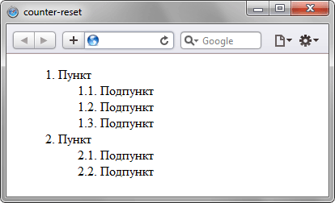

Описание
Устанавливает идентификатор,
в котором будет храниться
счётчик отображений
определенного элемента,
а также начальное значение счётчика.
Такой счётчик может выводиться
с помощью свойства
content
и псевдоэлементов
:after
и
:before
.
Синтаксис
counter-reset:
none | inherit |
идентификатор |
целое число
Значения
none
Запрещает инициацию счётчика для текущего селектора.
Запрещает инициацию счётчика для текущего селектора.
inherit
Наследует значение родителя.
Наследует значение родителя.
идентификатор
Задаёт одну или несколько переменных, в которых будет храниться значение счётчика. Значения разделяются между собой пробелом.
Задаёт одну или несколько переменных, в которых будет храниться значение счётчика. Значения разделяются между собой пробелом.
целое число
Начальное значение каждого идентификатора. По умолчанию равно 0.
Начальное значение каждого идентификатора. По умолчанию равно 0.
Пример
<!DOCTYPE html>
<html>
<head>
<meta charset="utf-8">
<title>
counter-reset
</title>
<style>
li {
list-style-type: none;
}
ol {
counter-reset: list1;
}
ol li:before {
counter-increment: list1;
content:
counter(list1) ". ";
}
ol ol {
counter-reset: list2;
}
ol ol li:before {
counter-increment: list2;
content:
counter(list1)
". "
counter(list2)
". ";
}
</style>
</head>
<body>
<ol>
<li>
Пункт
<ol>
<li>Подпункт</li>
<li>Подпункт</li>
<li>Подпункт</li>
</ol>
</li>
<li>
Пункт
<ol>
<li>Подпункт</li>
<li>Подпункт</li>
</ol>
</li>
</ol>
</body>
</html>
Результат данного примера
показан на рисунке ниже.
